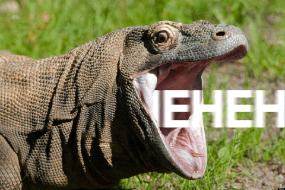

Since the time of the dinosaurs, there hasn't been a lizard that commands the same level of respect as the very modest Komodo dragon. Komodo dragons are recognized as insanely greedy things with an intense hunger. Because of their lack of self-awareness when eating, scientists have come to the conclusion that "they do not have or require a (f-word)-giving gland." So basically, even though they’re considered to be scavengers, they don't really care as long as they get to eat.
Because of this, Komodo dragons seem just as happy to gorge themselves on rotting roadkill as they are on the healthy flesh of a creature they have just slashed apart with their enormous lizard-claws.
Let's breakdown how this lizard can almost certainly kill you:
Super powerful for their size, Komodo dragons can easily slam anything that is larger than themselves to the ground with just their tails. Once the food is on the ground, the dragons use their razor-sharp teeth to rip through its soft underbelly and throat. Even if an animal manages to escape a Komodo dragon assault and bite, they will almost definitely die to their wounds over time since the Komodo dragons have a special gland in their jaws that secretes a toxin, almost like venom, that melts blood.
Didn't even know blood can melt, but anyways- carrying on…
In addition to all of this, Komodo dragons have a mouth full of bacteria due to their primary diet of rotting meat, so even if you manage to survive being bitten by one and avoid dying when the poison from the bite enters your system, you'll probably still pass away from an infection.
(I like the dragon from Shrek… kinda thought they'd be more like her… Fierce, confident and sensitive in the right way.)
If you somehow survive all of this, it's rumored that Kang-lar, the king of the Komodo dragons will bless your dreams with his presence and shake your hand. Maybe he's like Elizabeth (Dragon from Shrek also has a name)
Now that we know that, lets indulge as to why these dragons are not like Elizabeth and are stupid-

Komodo dragons can consume 80% of their own body weight in one sitting and prefer to consume their prey whole. Komodo dragons may unhinge their own jaw while feeding, just like snakes do, to eat food that is larger than their own head. As disturbingly cool as this is, Komodo dragons typically don't have the time to let the food slip naturally down their throat (especially with all the other hungry Komodo dragons prowling around). Instead, they headbutt trees mouth first to force the meal down their throat. The Komodo dragons may potentially do this with such power that the trees are simply knocked over.
Their genius idea is to give themselves brain damage.
Conclusion
They'rd dumb because when Komodo dragons force entire goats lubricated with deadly toxins into their faces, they show complete contempt for their own well-being, implying that they truly couldn't care less for it. At all.